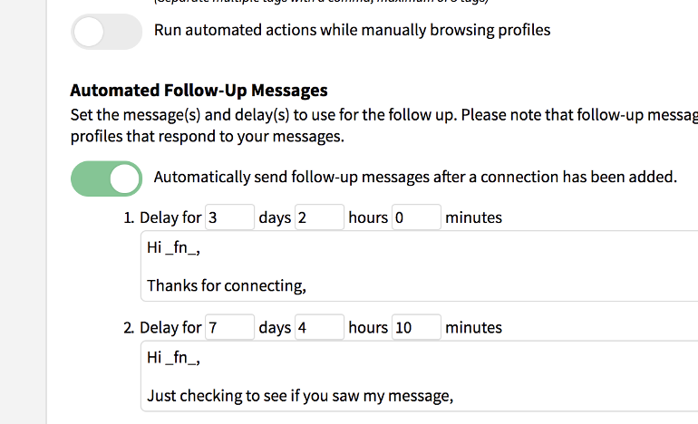

|
You have just upgraded to the latest version of Dux-Soup!
for the latest Dux-Soup news, updates and service alerts.
Check these great new features!
|
| |

v4.4.6
- Easily check prospects on Twitter with the quick-access 'Follow' button (see screenshot).
- Increased visit limit for LinkedIn Business Plus subscribers to 1000 per day (Pro).
- Daily visit-limit is now user-configurable via the options panel (Pro).
- User feedback via 'toasties' for all Dux-Soup actions.
- Keep notes with actions and follow-ups together with the LinkedIn profiles, using Dux-Soup Notes (see screenshot).
- These notes will load with the profiles whenever you access them!
- Export these notes together with profile summaries (Pro).
- Improved stability when visiting profiles on Mac and Ubuntu.
| |
If you enjoy Dux-Soup, why not drop us a line, or rate us in the Chrome webstore!
|